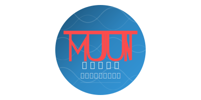

Japanese Elementary School Kanji Learning
1006 Essential Characters
Try Kana Matching Game →
Kanji Resources →
学年選択
全
全学年
1006字
1
1年生
80字
2
2年生
160字
3
3年生
200字
4
4年生
200字
5
5年生
185字
6
6年生
181字
年级面板表示
五十音順
あ行
か行
さ行
た行
な行
は行
ま行
や行
ら行
わ行
学年漢字一覧